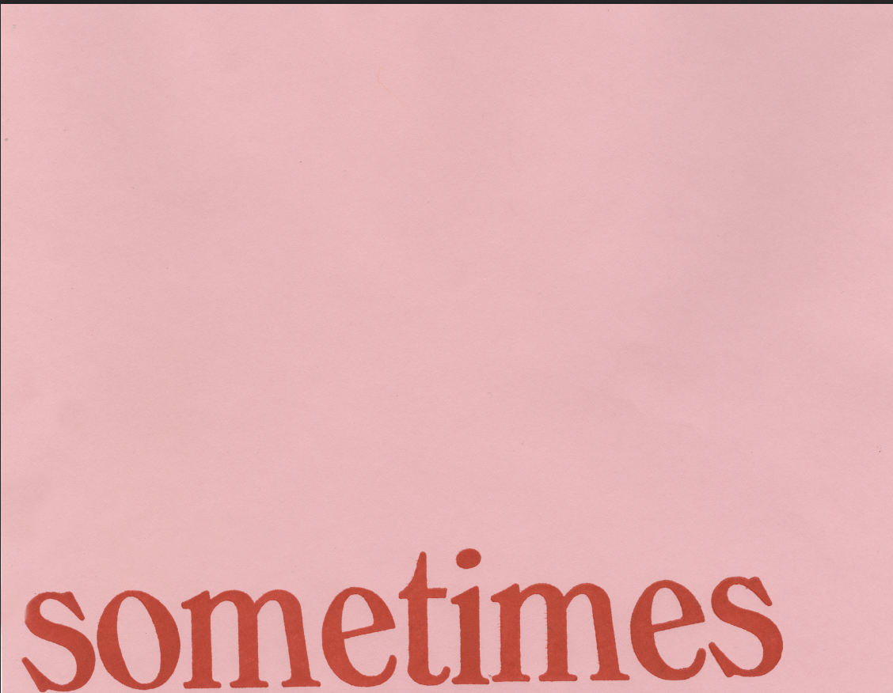
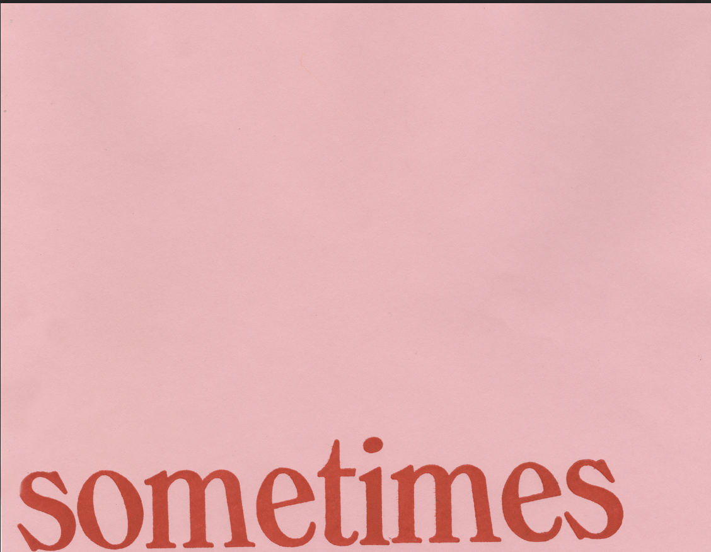
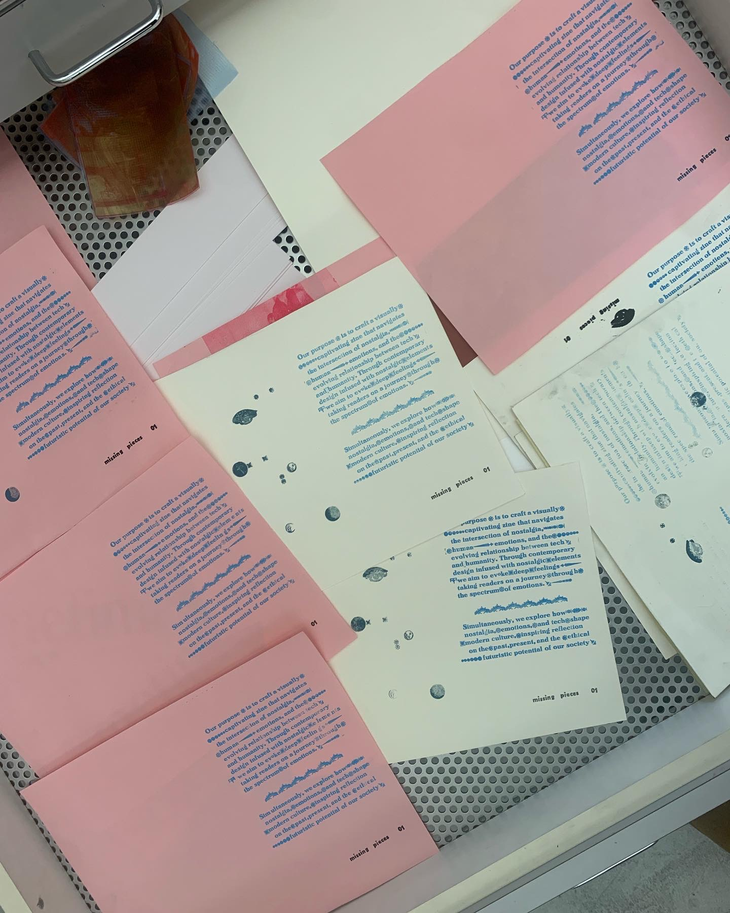
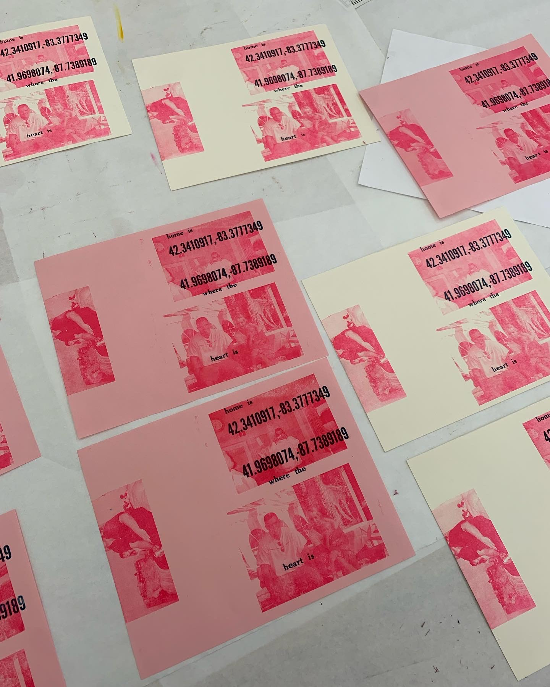
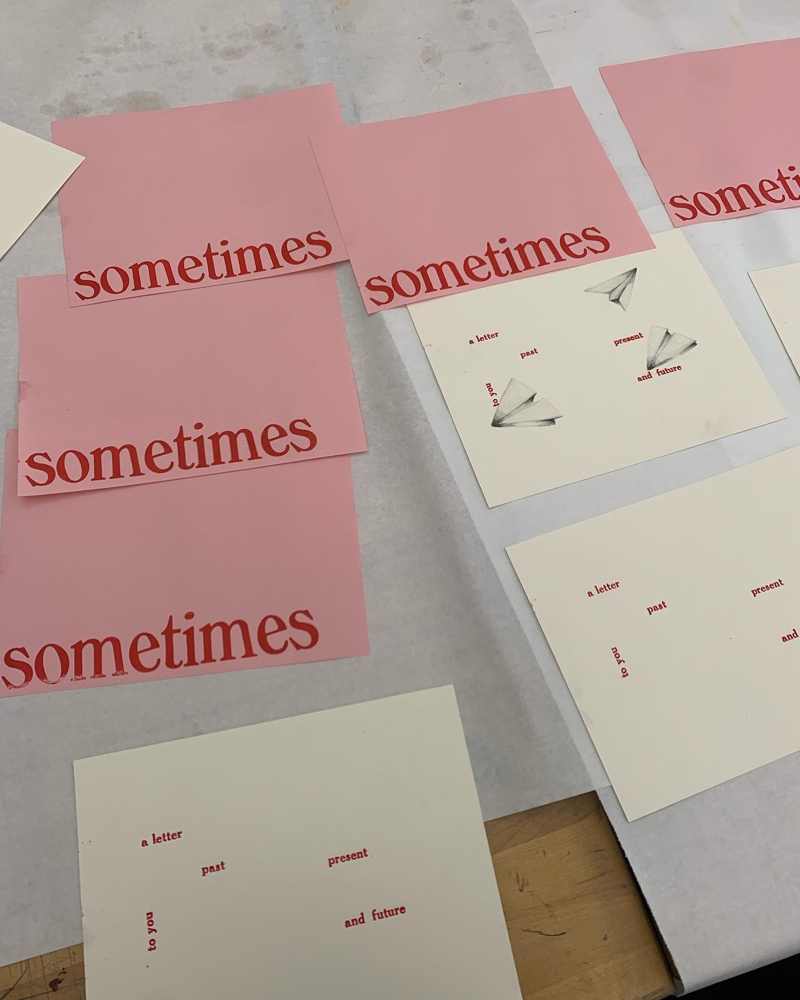
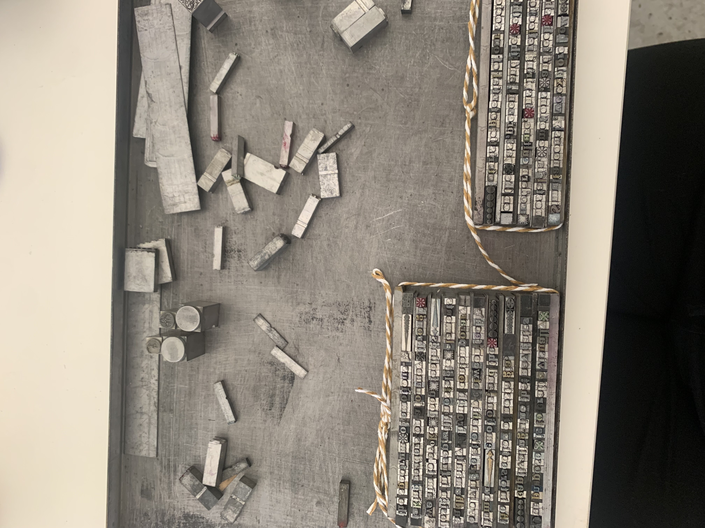
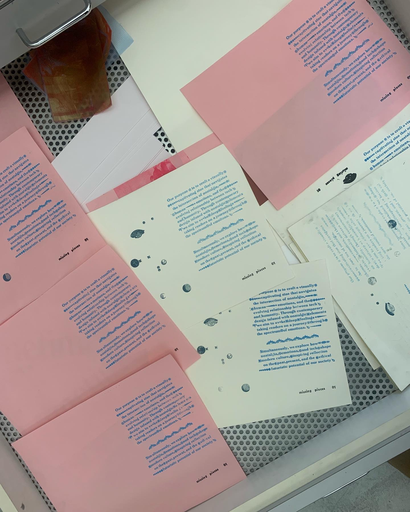
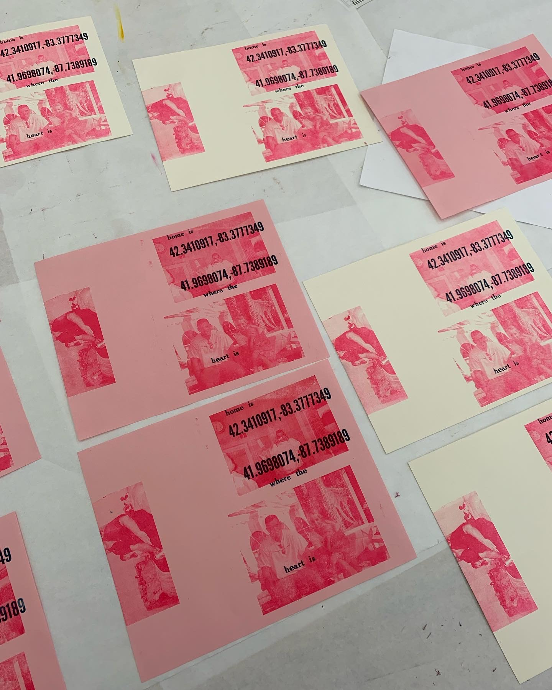
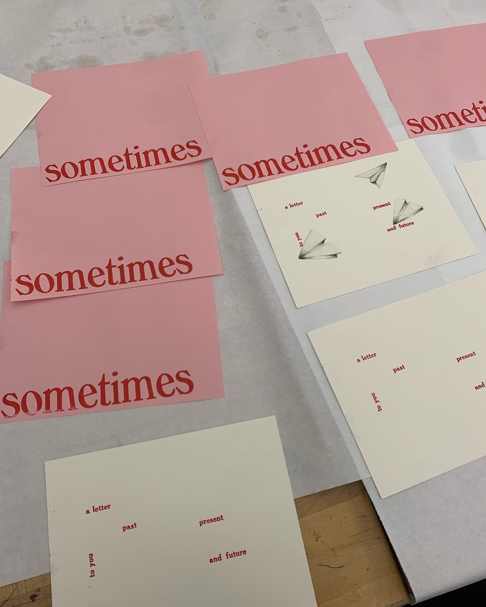
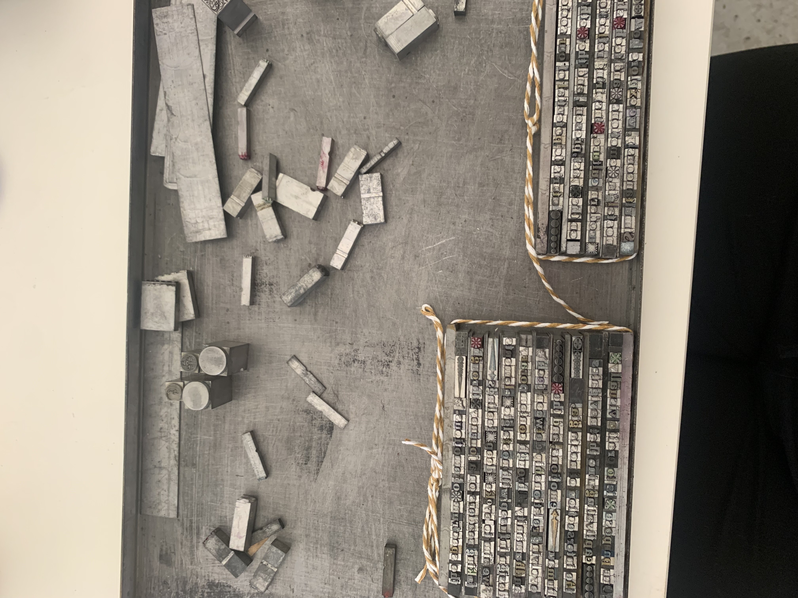

 







Missing Pieces
Missing Pieces is an ongoing project focusing on the nostalgia of adolescence and childhood and navigating adulthood on your own. These prints are part of exploration of past memories and transformation. I used both wood and metal types for these prints, as well as a polymer plate to print the images.